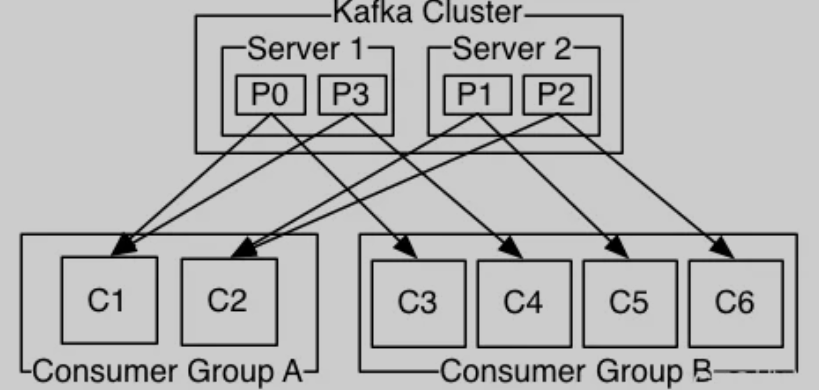
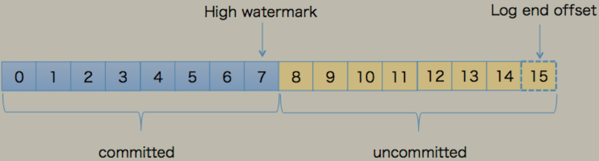

第二节 Kafka 中的关键术语解释
1、Topic：主题
在 Kafka 中，使用一个类别属性来划分消息的所属类，划分消息的这个类称为 Topic。
Topic 相当于消息的分类标签，是一个逻辑概念。
物理上不同 Topic 的消息分开存储，逻辑上一个 Topic 的消息虽然保存于一个或多个 Broker 上但用户只需指定消息的 Topic 即可生产或消费数据而不必关心数据存于何处。
2、Partition：分区
Topic 中的消息被分割为一个或多个 Partition，其是一个物理概念，对应到系统上就是一个或若干个目录。
Partition 内部的消息是有序的，但 Partition 间的消息是无序的。
3、Segment 段。
将 Partition 进一步细分为了若干的 Segment，每个 Segment 文件的大小相等。
4、Broker
Kafka 集群包含一个或多个服务器，每个服务器节点称为一个 Broker。
Broker 存储 Topic 的数据。如果某 Topic 有 N 个 Partition，集群有 N 个 Broker，那么每个 Broker 存储该 Topic 的一个 Partition。
如果某 Topic 有 N 个 Partition，集群有（N+M）个 Broker，那么其中有 N 个 Broker 存储该 Topic 的一个 Partition，剩下的 M 个 Broker 不存储该 Topic 的 Partition 数据。
如果某 Topic 有 N 个 Partition，集群中 Broker 数目少于 N 个，那么一个 Broker 存储该 Topic 的一个或多个 Partition。
在实际生产环境中，尽量避免这种情况的发生，这种情况容易导致 Kafka 集群数据不均衡。
5、Producer：生产者。
即消息的发布者，生产者将数据发布到他们选择的主题。生产者负责选择将哪个记录分配给主题中的哪个分区。即：生产者生产的一条消息，会被写入到某一个 Partition。
6、Consumer：消费者。
可以从 Broker 中读取消息。
- 一个消费者可以消费多个 Topic 的消息；
- 一个消费者可以消费同一个 Topic 中的多个 Partition 中的消息；
- 一个 Partiton 允许多个 Consumer 同时消费。
7、Consumer Group
Consumer Group 是 Kafka 提供的可扩展且具有容错性的消费者机制。
组内可以有多个消费者，它们共享一个公共的 ID，即 Group ID。组内的所有消费者协调在一起来消费订阅主题 的所有分区。
Kafka 保证同一个 Consumer Group 中只有一个 Consumer 会消费某条消息。
实际上，Kafka 保证的是稳定状态下每一个 Consumer 实例只会消费某一个或多个特定的 Partition，而某个 Partition 的数据只会被某一个特定的 Consumer 实例所消费。
下面我们用官网的一张图, 来标识 Consumer 数量和 Partition 数量的对应关系。

由两台服务器组成的 Kafka 群集，其中包含四个带有两个使用者组的分区（P0-P3）。消费者组 A 有两个消费者实例，组 B 有四个。
对于这个消费组, 以前一直搞不明白, 我自己的总结是：Topic 中的 Partitoin 到 Group 是发布订阅的通信方式。
- 即一条 Topic 的 Partition 的消息会被所有的 Group 消费，属于一对多模式；
- Group 到 Consumer 是点对点通信方式，属于一对一模式。
举个例子：不使用 Group 的话，启动 10 个 Consumer 消费一个 Topic，这 10 个 Consumer 都能得到 Topic 的所有数据，相当于这个 Topic 中的任一条消息被消费 10 次。
使用 Group 的话，连接时带上 groupid，Topic 的消息会分发到 10 个 Consumer 上，每条消息只被消费 1 次。
8、Replizcas of partition
分区副本。副本是一个分区的备份，是为了防止消息丢失而创建的分区的备份。
9、Partition Leader
每个 Partition 有多个副本，其中有且仅有一个作为 Leader，Leader 是当前负责消息读写的 Partition。即所有读写操作只能发生于 Leader 分区上。
10、Partition Follower
所有 Follower 都需要从 Leader 同步消息，Follower 与 Leader 始终保持消息同步。Leader 与 Follower 的关系是主备关系，而非主从关系。
11、ISR
- ISR，In-Sync Replicas，是指副本同步列表。ISR 列表是由 Leader 负责维护。
- AR，Assigned Replicas，指某个 Partition 的所有副本, 即已分配的副本列表。
- OSR，Outof-Sync Replicas，即非同步的副本列表。
- AR=ISR+OSR
12、Offset
偏移量。每条消息都有一个当前 Partition 下唯一的 64 字节的 Offset，它是相当于当前分区第一条消息的偏移量。
13、Broker Controller：
Kafka集群的多个 Broker 中，有一个会被选举 Controller，负责管理整个集群中 Partition 和 Replicas 的状态。
14、HW 与 LEO
- HW，HighWatermark，高水位，表示 Consumer 可以消费到的最高 Partition 偏移量。HW 保证了 Kafka 集群中消息的一致性。确切地说，是保证了 Partition 的 Follower 与 Leader 间数 据的一致性。
- LEO，Log End Offset，日志最后消息的偏移量。消息是被写入到 Kafka 的日志文件中的， 这是当前最后一个写入的消息在 Partition 中的偏移量。
- 对于 Leader 新写入的消息，Consumer 是不能立刻消费的。Leader 会等待该消息被所有 ISR 中的 Partition Follower 同步后才会更新 HW，此时消息才能被 Consumer 消费。

15、ZooKeeper：
ZooKeeper 负责维护和协调 Broker，负责 Broker Controller 的选举。在 Kafka 0.9 之前版本，Offset 是由 ZooKeeper 负责管理的。
总结：ZooKeeper 负责 Controller 的选举，Controller 负责 Leader 的选举。
16、Coordinator：
一般指的是运行在每个 Broker 上的 Group Coordinator 进程，用于管理 Consumer Group 中的各个成员，主要用于 Offset 位移管理和 Rebalance。一个 Coordinator 可以同时管理多个消费者组。
17、Rebalance
当消费者组中的数量发生变化，或者 Topic 中的 Partition 数量发生了变化时，Partition 的所有权会在消费者间转移，即 Partition 会重新分配，这个过程称为再均衡 Rebalance。
再均衡能够给消费者组及 Broker 带来高性能、高可用性和伸缩，但在再均衡期间消费者是无法读取消息的，即整个 Broker 集群有小一段时间是不可用的。因此要避免不必要的再均衡。
18、Offset Commit
Consumer 从 Broker 中取一批消息写入 Buffer 进行消费，在规定的时间内消费完消息后，会自动将其消费消息的 Offset 提交给 Broker，以记录下哪些消息是消费过的。当然，若在时限内没有消费完毕，其是不会提交 Offset 的。